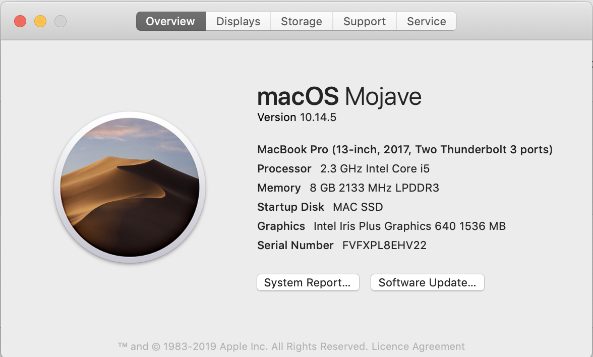
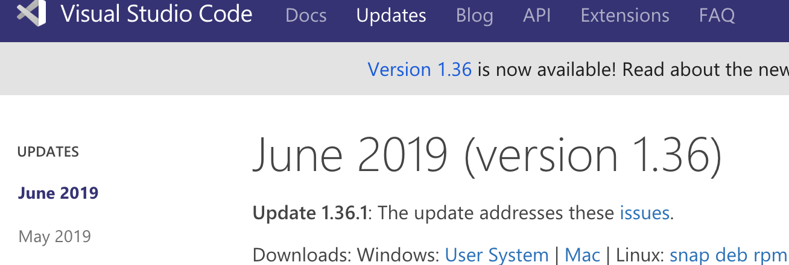

1.1 Purpose of IT in Modern Business
Ref: Purpose of IT Modern Business
1.2 Methods, skills, and resources needed to complete digital project
Ref: Digital project
1.3 Plan and carry out tasks using IT
So, once the plan setting has been done for the website in a step, for example making CSS for styling, adding contents within HTML and designing the layouts.
After all that has been, although there might be some extras need to be added later on. The contents of the plan will be carried out by Visual Studio Coding.

1.4 Risks that impact the project
This causes a small scale to large scale of impact to projects failing depending on the size of the actual project.
For example: even though my project might be a small one, but the risks it contains can be internet disconnection, trello board which contains my plan getting closed down or server overloaded, there's also computer system malfunctioning and much more which can cause the project to fail or deadline passed.
Some of the risks that can make the project to fail are:
- DoS attack on trello: which can cause trello to close down or overloaded.
- Internet disconnection: unable to access online network and since the project is in the cloud drive thus without internet connection it'd unreachable.
- System malfunction: computer system malfunctioning such as malware / virus attack.
- Data loss: losing data throughout the cloud drive for the project. This can happen when the storage server receives a cyber attack.
1.5 Selecting and using IT systems and software
 
1.6 How the chosen technologies helped to achieve the outcomes
Github is hosting for software development version control using Git. Github is the code hosting platform for version control one projects from anywhere. As Git and Github work together, Git is the assigned version control system for managing any changes to the source code history during software development.
Ref: Git & Github Trello
1.7 Legal guidelines and constraints that impact digital projects
There are also GDPR (general data protection regulation), which applies for EU and EEA. The aim of it is to boost the rights that citizens of the EU/EEA have over their data that is held and processed by an organisation. this is to make sure that the people can have a greater capability over their data and make organisations more clear on how they'd deal with the sensitive information.